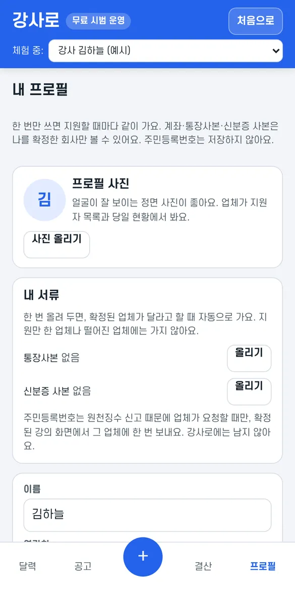
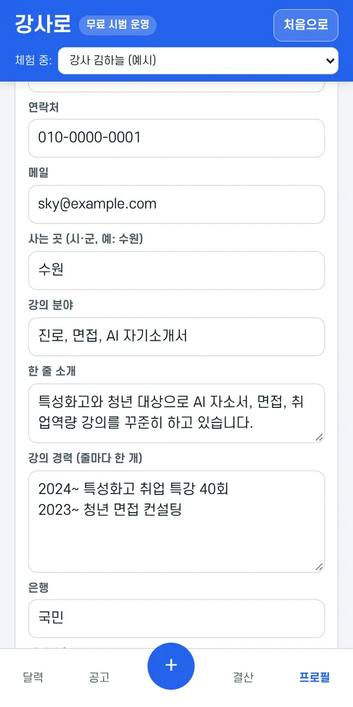
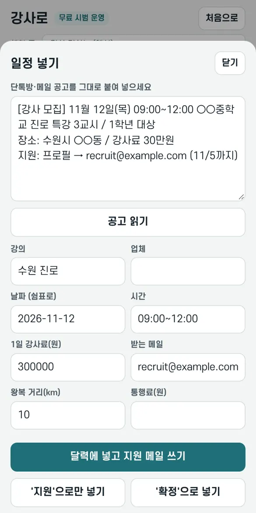
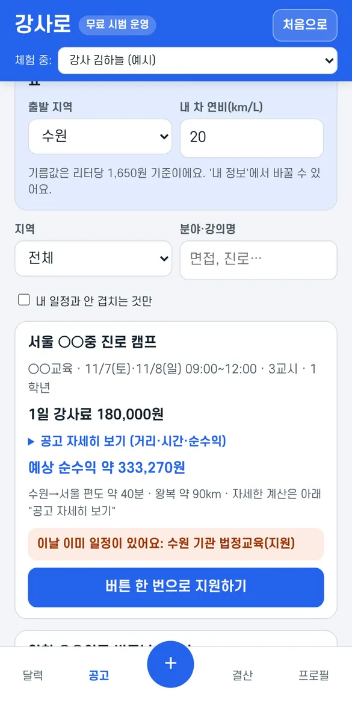
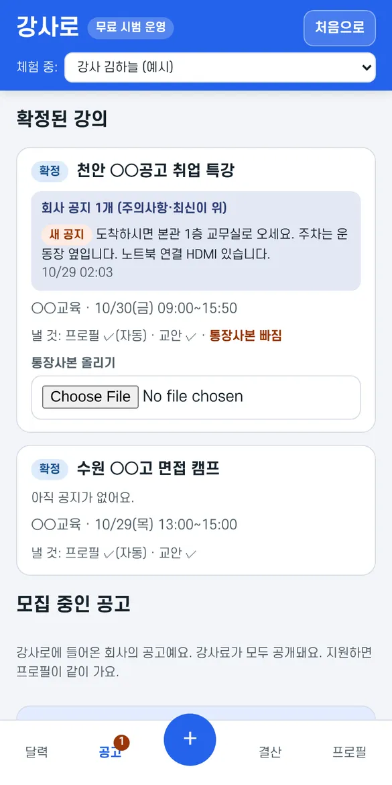
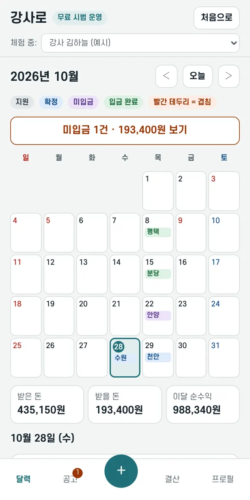
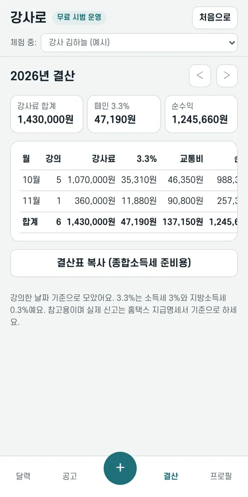

강사님, 이것만 알면 다 써요
가입은 1분이에요. 프로필을 한 번 채워 두면 지원할 때마다 같이 가고, 일정·강사료·순수익이 달력 하나에 모여요.
1가입하기
- 강사로 앱을 열어요. 카톡에서 열었다면 오른쪽 위 ⋮ → 다른 브라우저로 열기를 누르면 편해요.
- 구글 계정으로 시작을 누르거나, 메일 주소를 넣고 로그인 링크 받기를 눌러요. 메일로 온 링크를 누르면 로그인돼요 (비밀번호 없음).
- 강사예요를 고르고 이름·연락처·사는 곳을 넣은 뒤 가입하기.
- 위쪽에 앱 설치 버튼이 보이면 눌러 두세요. 폰 홈 화면에 앱처럼 생겨요. 아이폰은 Safari에서 공유 → 홈 화면에 추가예요.
2프로필과 내 서류 채우기
아래 프로필 탭에서 한 번만 채우면 돼요.
- 사진·강의 분야·한 줄 소개·강의 경력: 지원할 때 업체가 프로필로 봐요.
- 계좌: 강사료 받을 통장. 나를 확정한 업체만 볼 수 있어요.
- 내 서류: 통장사본·신분증 사본을 올려 두면, 확정된 업체에 자동으로 가요. 지원만 한 업체나 떨어진 업체에는 가지 않아요.
- 내 차 연비·출발 지역: 거리·기름값·순수익 계산에 써요.


3톡방 공고를 달력에 넣고 지원 메일 쓰기
- 단톡방·메일의 공고를 길게 눌러 복사해요.
- 아래 가운데 +를 누르고 붙여 넣은 뒤 공고 읽기.
- 강의명·날짜·시간·강사료·받는 메일이 자동으로 채워져요. 틀린 곳만 고쳐요. 요일이 안 맞거나 다른 일정과 겹치면 빨간 글씨로 알려 줘요.
- 달력에 넣고 지원 메일 쓰기를 누르면 받는 메일 복사 · 제목 복사 · 본문 복사 버튼이 나와요. 메일 앱에 차례로 붙여 넣고 프로필 파일을 첨부해 보내요.
메일 없이 일정만 넣을 때는 '지원'으로만 넣기, 이미 정해진 강의는 '확정'으로 넣기를 눌러요.

4앱에 올라온 공고는 버튼 한 번으로 지원
- 공고 탭에서 지역·분야로 골라 봐요. 내 일정과 안 겹치는 것만도 고를 수 있어요.
- 공고마다 예상 순수익(3.3%·기름값·통행료를 뺀 돈)과 거리가 보여요.
- 버튼 한 번으로 지원하기를 누르면 프로필이 같이 가고, 내 달력에 회색 '지원'으로 들어가요.

5확정되면 할 일
- 업체가 확정하면 알림이 오고, 달력이 파랑 확정으로 바뀌어요.
- 홈 달력에서 강의 날짜를 누르면 아래 일정 카드(옆으로 넘김)가 그 강의로 넘어가요. 여기서 업체 공지(주차·장소·준비물)를 보고, 업체가 요청한 서류(교안 등)를 올려요.
- 주민등록번호는 업체가 원천징수 신고에 필요할 때만, 이 화면에서 그 업체에 한 번 보내요. 업체가 확인하면 바로 지워지고, 강사로에는 남지 않아요.
- 강의 전날 확인했어요, 당일 출발·도착을 눌러 주면 업체가 전화하지 않아도 돼요.
- 사정이 생겨 취소할 때는 사유를 적어야 해요. 업체에 바로 알려져요.

6달력과 미입금
색으로 상태를 한눈에 봐요: 지원 확정 미입금 입금 완료. 빨간 테두리는 일정이 겹친다는 뜻이에요.
- 날짜를 누르면 그날 강의의 강사료·순수익·출발 시간이 나와요. 구글 캘린더에 넣기 버튼도 있어요.
- 강의가 끝났는데 강사료가 안 들어오면 자동으로 미입금이 돼요. 맨 위 미입금 보기에서 모아 보고, 통장에 들어오면 입금 확인을 눌러요.

7결산
결산 탭에 월별 강사료·3.3%·교통비·순수익이 모여요. 결산표 복사로 5월 종합소득세 준비 때 쓰세요. 실제 신고는 홈택스 지급명세서 기준으로 해요.

8소개하기
위쪽 소개하기에서 내 링크를 복사해 보내요. 그 링크로 강사가 가입하면 둘 다 1주일, 업체가 가입하면 둘 다 1개월 무료 기간이 늘어요 (최대 6개월). 강사는 프로필을 채우면, 업체는 첫 공고를 올리면 인정돼요.
자주 묻는 것
내 연락처·계좌는 누가 봐요?
나를 확정한 업체만 봐요. 지원만 한 업체, 떨어진 업체는 이름·분야·소개·경력만 봐요.
주민등록번호를 저장해요?
저장하지 않아요. 확정된 업체에 한 번 보내고, 업체가 확인하면 바로 지워져요. 확인하지 않아도 30일 뒤 지워요.
이상한 공고를 봤어요
강사로는 강사에게 돈을 요구하지 않아요. 선입금·교재비·보증금을 요구하거나 개인 카톡·텔레그램으로 부르는 공고는 공고 아래 '이 공고 신고'를 눌러 주세요. 운영자가 확인하고, 새로 가입한 업체('신규 업체' 표시)의 공고는 강사 3명이 신고하면 바로 내려가요. 이런 표현이 들어간 공고는 처음부터 운영자 확인 뒤에 보여요.
돈이 들어요?
지금 가입하면 3개월 무료예요. 카드 등록 없이 시작해요. 소개로 쌓인 기간만큼 더 무료로 써요. 무료 기간 뒤에는 베이직(강의 달력·지원하기, 월 4,900원) · 프로(베이직 + 순수익·미입금·연말 결산, 월 9,900원)이에요. 이용 기간이 끝나면 지금까지 한 것은 계속 볼 수 있지만 지원·일정 등록·프로필 내려받기는 잠겨요.
구글 캘린더 일정을 한 번에 옮길 수 있어요?
네. PC에서 구글 캘린더 → 톱니바퀴 → 설정 → 가져오기/내보내기 → 내보내기를 누르면 .zip 파일이 받아져요. 강사로 프로필 탭 아래 다른 달력에서 일정 가져오기에서 그 파일을 그대로 고르면, 제목이나 메모에 '강의·특강·교시·강사료' 같은 말이 있는 일정만 골라서 들어가요. 메모에 "페이 30만"처럼 적힌 금액도 읽어요. 같은 일정은 두 번 들어가지 않아요.
폰을 바꾸면요?
같은 구글 계정이나 같은 메일로 로그인하면 그대로 이어져요.
강의 업체도 운영해요. 업체로도 쓸 수 있어요?
네. 맨 위의 업체로도 쓰기를 누르고 업체명과 사업자등록번호를 넣으면 같은 계정에 업체 화면이 생겨요. ⇄ 업체 화면 / ⇄ 강사 화면 버튼으로 오가고, 내 강의 달력·순수익은 강사 화면에 그대로 있어요.
업체 강사카드 양식은 어디서 받아요?
홈 달력에서 그 강의 날짜를 누르고, 일정 카드의 빠진 서류 옆에 양식 받기가 보이면, 받아서 채운 뒤 바로 아래에서 올리면 돼요. 한글 파일도 올릴 수 있어요 (650KB 이하).
더 궁금한 게 있어요
tobadyclup@naver.com으로 보내 주세요.